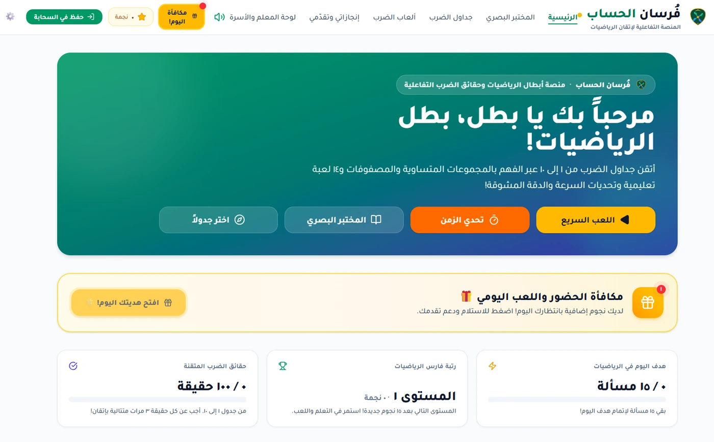
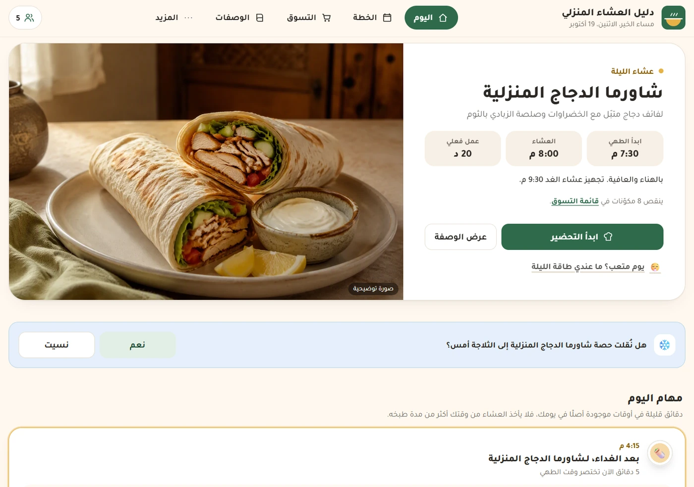

فرسان الحساب
منصة تعليمية تفاعلية تجعل التدرّب على الحساب وجدول الضرب تجربة أكثر حيوية، وتمنح المتعلّم مساحة للتحدي والتقدّم.
مساحة شخصية أستكشف فيها إمكانات الذكاء الاصطناعي، وأحوّل الأفكار والاحتياجات إلى مشاريع رقمية قابلة للاستخدام. هنا أجرّب، وأبني، وأتعلّم في الطريق.

دليل العشاء المنزلي الذكيVISIT ↗
كل مشروع بدأ بسؤال مختلف، لكنه يشترك مع الآخر في الرغبة بتحويل الفكرة إلى شيء يمكن تجربته والاستفادة منه.
منصة تعليمية تفاعلية تجعل التدرّب على الحساب وجدول الضرب تجربة أكثر حيوية، وتمنح المتعلّم مساحة للتحدي والتقدّم.
تجربة رقمية توظّف الذكاء الاصطناعي في تنظيم أفكار العشاء المنزلي وتبسيط التخطيط لوجبة اليوم، انطلاقًا من حاجة يومية مألوفة.
لا أبدأ دائمًا من المكان نفسه. أحيانًا توجد مشكلة تستحق حلًا، وأحيانًا تقودني فكرة مثيرة إلى تجربة جديدة. ما يجمع مشاريعي ليس المجال الذي تنتمي إليه، بل الرغبة في اكتشاف ما يمكن بناؤه عندما يلتقي الفضول بالأدوات المناسبة.
ليست وصفة ثابتة، لكنها طريقة أحب العودة إليها كلما بدأت شيئًا جديدًا.
فكرة تلفت انتباهي، أو مشكلة يومية أرى أن هناك طريقة أفضل للتعامل معها.
أستكشف الأدوات المناسبة، وأختبر الاحتمالات، ثم أحوّل الفكرة إلى تجربة قابلة للاستخدام.
أتعلم من الاستخدام والملاحظات، وأعدّل التجربة لتصبح أكثر وضوحًا وفائدة.
أتعامل مع الذكاء الاصطناعي بوصفه مساحة للتعلّم والتجريب وصناعة الأشياء، لا مجرد وسيلة للحصول على الإجابات. هذا المختبر يوثّق ما قادني الفضول أو الحاجة إلى بنائه، وما قد تقودني إليه الأفكار القادمة.